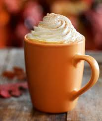

Add milk, pumpkin puree, and sugar to a saucepan over medium heat. Heat until hot, but do not boil. Remove the saucepan from the heat and whisk in the vanilla, pumpkin pie spice, and the coffee.
Divide the mixture between two mugs. Top with whipped cream and a sprinkle of pumpkin pie spice.